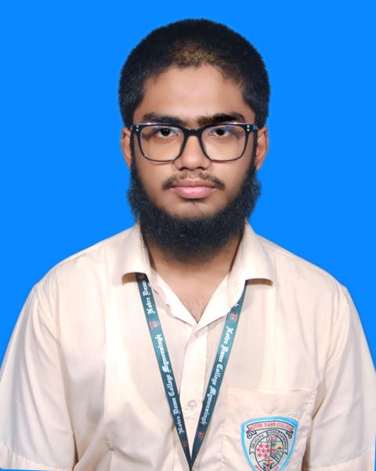

Muhammad Radif Hassan
Date of Birth: 28 June, 2008
Phone: +880 160 932 1970
Mail: m.radifhassan3@gmail.com
Address: 128/1 Gohailkandi Road, Mymensingh City, Mymensingh, Bangladesh
LinkedIn: linkedin.com/in/muhammad-radif-hassan
GitHub: github.com/mradifhassan
Profile
Ambitious and driven 11th-grade Science student with a passion for STEM, leadership, and innovation. Excelled in national-level competitions including Robot Olympiad.
Demonstrated initiative by founding communities and developing digital projects, including the first-ever website for a college club. Eager to contribute
to research programs, international programs and opportunities.
Education
Higher Secondary Certificate (HSC) – Science Group
Notre Dame College, Mymensingh, Bangladesh
2025 – Expected 2027
- Roll: 1271064
- Core Subjects: Higher Mathematics, Physics, Chemistry, Biology
Secondary School Certificate (SSC) - Science Group
Progressive Model School, Mymensingh
2023 – 2025
- GPA: 4.89/5.00
- Got A+ in core subjects (Physics, Chemistry, Higher Mathematics and Biology)
Leadership & Initiatives
Personal Website
2024 - Present
- Published articles, solved programming problems, mathematical problems, physcis problems on the
website.
- Whatever I learnt, I tried to host everything to the audience of the world so that people could find it very easy for them.
- Open source contributions
- Written a physics guide book partially (helping hands for the learners) taking helps from various resources and published as an open source academic material for 9th-10th grade students since Bangladesh has a lackness for teaching physics properly.
President, Mathematics Club
Notre Dame College Mymensingh
2025 – Present
- Lead mathematics-focused activities, competitions, and educational initiatives for club members.
- Pioneered the creation of the club's first official static
website using HTML, CSS, and Vanilla JavaScript
through vibe coding skill– a historic achievement for any club at the college.
- Customized, reviewed, and hosted the site on GitHub Pages; now indexed and discoverable via Google search.
Founder, পদব্রীহি (Padabrihi) Community
2024 - Present
- Established a platform to promote creative writing, essays, and book reviews among youth.
- Manage social media presence (Facebook & Instagram); currently developing the full community static website to expand reach and content sharing.
Volunteering Tutor
- Provide one-on-one tutoring to junior students in Mathematics, Physics, and ICT, fostering academic growth in peers.
Achievements
- Runner-Up, SciQuest 1.0 Robo Quiz (in 2023)
- 2nd Place, ICT Segment, Notre Dame Science, Technology & Education Fair, Notre Dame College Mymensingh (in 2025)
- Qualified for National Round (X2), Bangladesh Robot Olympiad (in 2023 and 2025)
- Regional Round Participation (X2), Bangladesh Physics Olympiad (in 2023 and 2025)
- Regional Round Participation, Bangladesh Mathematics Olympiad(in 2023 and 2025)
- Qualified for Semi-Final Round of the International Physics Competition - IPhyC (in 2025)
- Qualified for Semi-Final Round of the International Chemistry Competition - IPhyC (in 2026)
- Qualified for Semi-Final Round of the International Astronomy and Astrophysics Competition - IAAC (in 2026)
Skills
- Technical
- Programming: C, HTML, CSS, LaTeX
- Tools: GitHub (hosting & version control), Canva, GIMP, LibreOffice, GNUPlot
- Systems: Linux enthusiast (Daily driver: Ubuntu)
- Interpersonal
- Leadership, Public Speaking, Communication, Networking
- Languages
- Bangla: Native
- English: Moderate (Speaking & Writing)
- Hindi & Urdu: Intermediate (Speaking)
- Certification
- Spoken English Course, Saifur's (2025)
Interests
- Exploring real-world applications of mathematics and physics
- Linux systems and open-source technologies
- Reading fiction and non-fiction
- Building personal projects in programming and web development
- Promoting literature and creative expression through community initiatives.